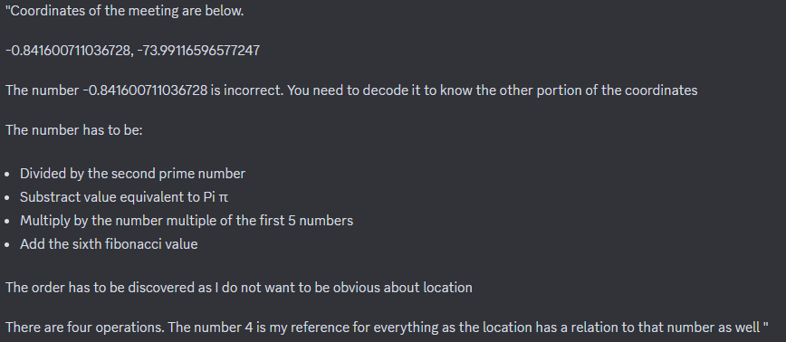
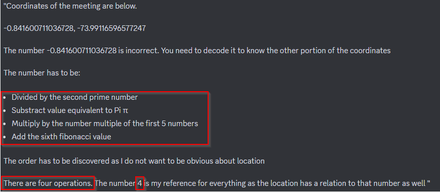
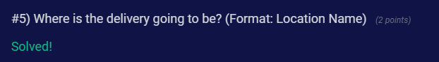
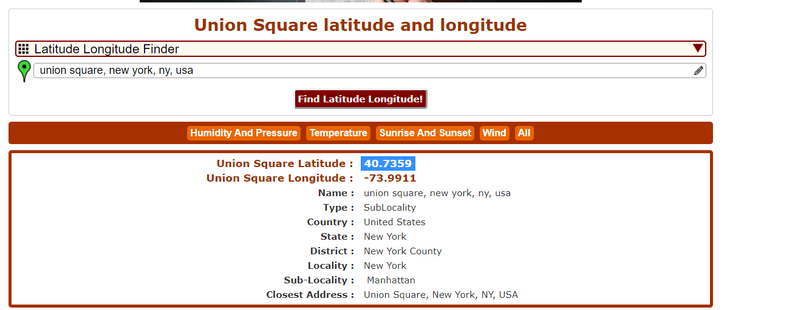
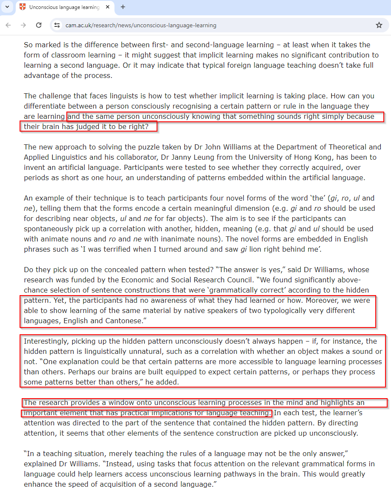
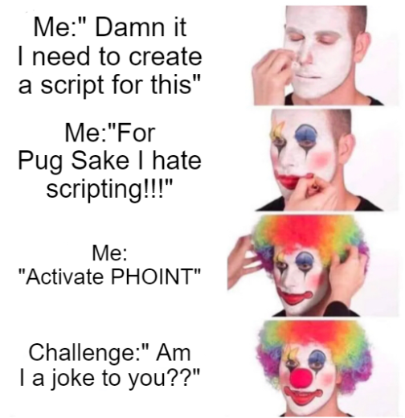

¿PHOINT? to solve OSINT Challenge:
The Challenge:

The Solve:
4 <-> quatro (first qua) <-> quadrado (second qua) <-> square (third qua) <-> time square ❌ <-> union square ✅
Explanation:

"We have 4 operations and the number 4 is the reference for everything".
So in my mind the first thing that come to me was the translation for the number 4 to portuguese that is "quatro" but to focus on the phonetic sound of the "qua" from the "quatro" word.
Then base on the phonetic sound of the "qua" from "quatro" word I correlate the other word that was "quadrado" base on the "qua" also.
Finally using the same pattern the last word that came to me was "square" because of the sound also of the "qua".
The phonetic correlation of the three "qua" should appear to you at this point.
My first guess was "time square" but was wrong ❌ and then I think "there is another square but im not remembering the name" and then I remember the name that was "union square" and I solve the challenge.✅

Well I cannot just guess stuff, I also need to prove it, so I went for google dorking and found the bellow result confirming the location.

I decided to give a name to this and a definition since I tried to find stuff related to this and I couldnt.
Phonetic Intelligence (PHOINT) - Given a piece of information correlate the phonetic sounds of keywords from the same or different languages to produce valid pieces of information.
Also I found the below article from the University of Cambridge that explains a little bit in a different approach about this stuff.

Meme Explanation:

Feel free to ping and write me.